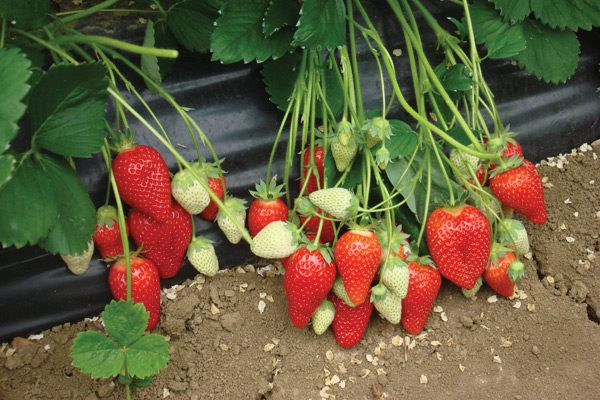
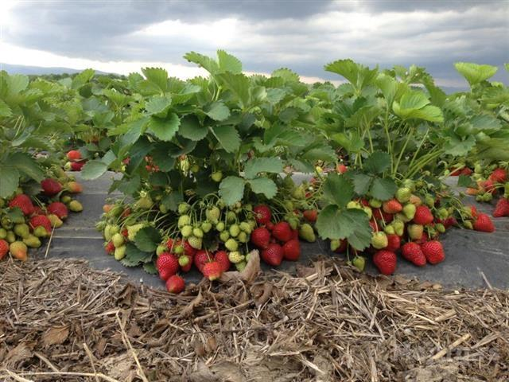
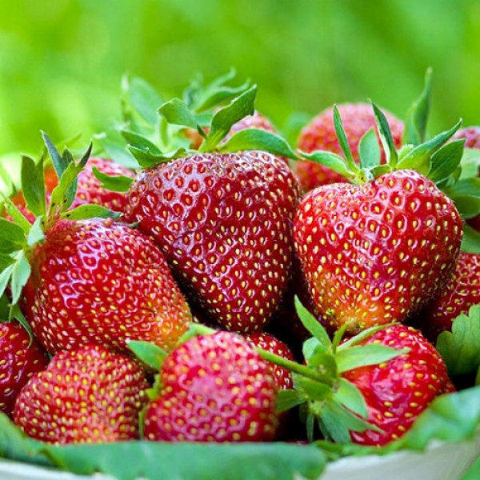

The popularity of such a variety of strawberry as "Alba" is due to different characteristics: the mass and appearance of the fruit, the speed of their ripening and resistance to various diseases.
The fruits of "Alba" are quite large, about 25-30 g, and in some cases even more. The skin is light red.
Strawberry fruit has an accurate shape, slightly elongated and one-dimensional, which makes them very attractive in the eyes of all customers. The unique juicy and sweet taste with a slight hint of acidity also plays a unique role, which gives this peculiarity and precision. Such strawberries grow with strong bushes about 30 cm high, and the number of leaves is average, they are large and have a bright green color.
If you decide to grow "Albu" from seed, then choose only reliable and trustworthy growers. So, it will guarantee you good crop germination and a rich harvest. This procedure should start in mid-January and end in late February. Planting soil can be purchased at a specialty store, but it can also be made in person. Strawberry seeds are very small, so the soil should be well loosened and light. For a better shot, add sand, humus and peat. So, before planting, soak the seeds in water for a few days, which should be changed to clean every day.
Experienced gardeners like to make "Albu" strawberries with the help of seedlings. This is the key to intensive growth and great taste of future fruits. There are two classes of seedlings for their quality. Strawberry seedling class "A" has a root length of 5 cm or more, it already has 3 or more developed leaves. The bush itself is strong, and the apical bud is already well developed.


